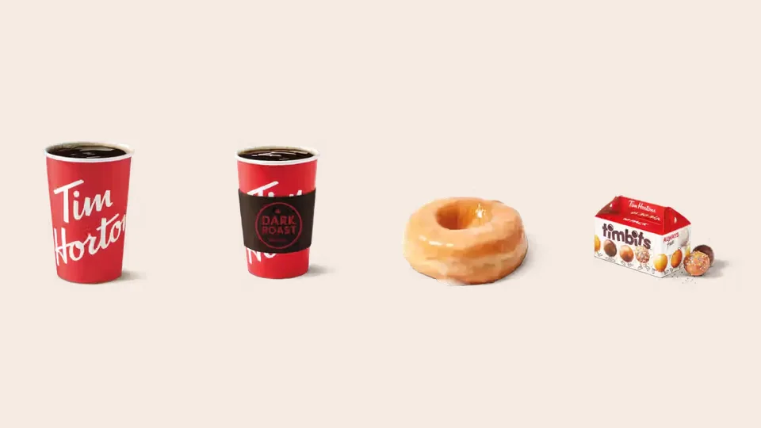

Unofficial fan guide - not affiliated with Tim Hortons
How cups and digital rolls work, what you can win, the odds, 40 years of history and what to expect in 2027.
Full Menu / Blog / Roll Up the Rim

Roll Up the Rim is Tim Hortons' annual spring contest, officially called Roll Up To Win. Roll up a hot-drink cup's rim or reveal digital rolls in the Tims app to win coffee, donuts or bigger prizes. The 2026 contest ran February 23 to March 22; 2027 dates are not yet announced.
Roll Up the Rim is a prize contest that Tim Hortons has run every spring in Canada since 1986, and it is the reason many Canadians check the lip of their coffee cup each February. The prize is printed under the rolled rim of a paper hot-beverage cup, so the cup itself is the game piece.
The contest has had two names. It launched as Roll Up the Rim to Win, and in 2020 it moved mostly into the Tim Hortons app as Roll Up To Win. Most people still search for the old name, and the 2026 contest brought back physical cups for its 40th year, so both names now describe the same thing.
The official name is Roll Up To Win, used since the contest went digital in 2020. Tim Hortons still talks about "Rolling Up The Rim" when it means the physical cups, so you will see both phrases in its own announcements.
There are two ways to play: rolling up the rim of a contest cup, and revealing digital rolls in the Tim Hortons app. You can do both in the same contest.
Buy a hot drink during the contest and you may get a Roll Up To Win cup. When you finish, push the rim up with your thumbs and read the message underneath. A winning cup tells you the prize. Cups are only handed out while supplies last, so a restaurant may run out before the contest ends.
Digital rolls are extra chances stored in your Tims Rewards account. You earn them by scanning the Tims Rewards QR code in the app (or a Tims Rewards card) when you pay, then tap to reveal each one in the app. Each roll shows a prize or a non-winning message, just like a cup.
For the 2026 contest, Tim Hortons' February 18 release listed these ways to earn rolls:
| How you buy | Digital rolls earned (2026) |
|---|---|
| Eligible hot or cold drink, breakfast sandwich or wrap, or lunch/dinner item, scanned with Tims Rewards | 1 roll |
| The same order placed in the app for pickup or delivery | 2 rolls |
| Bringing a reusable cup (Tims Rewards members) | 1 extra roll |
| Tims at Home or retail merchandise purchase | 3 rolls |
| Submitting a grocery store receipt | 3 rolls |
The cheapest way to stack rolls is to order your usual drink in the app and bring a reusable cup, which by the 2026 rules adds up to three rolls on one visit.
Digital rolls have a deadline that falls about 12 days after the contest ends. For 2026 it was April 3, and for 2025 it was April 4. Rolls you do not reveal by the deadline cannot be revealed later, so open them before then.
Most wins are a free coffee or a donut, and the big prizes are rare. For 2026, Tim Hortons said there were more than 30 million prizes, including:
Those last two lines are the point. Free coffee and donuts make up about 25 million of the 30 million prizes, so roughly five in six wins are a drink or a donut.
Tim Hortons does not publish one simple odds figure for the modern contest, because digital odds change with timing. University of Waterloo statistician Michael Wallace wrote in March 2020 that the old cup contest gave about a 1-in-6 chance per cup, and that the 2020 cups dropped to 1 in 9.
Digital rolls work differently. The contest rules say digital odds depend on how many people reveal rolls and when, because prizes are assigned to "winning timeframes" through the reveal period. In practice, the only lever you control is the number of rolls you earn: more rolls means more chances.
The Canadian contest is open to residents of Canada aged 13 or older, or 14 or older in Quebec. No purchase is necessary: the official rules include a free way to enter. You need a registered Tims Rewards account for digital rolls, and big-prize winners must answer a skill-testing question, which Canadian contest law requires.
Tim Hortons runs a separate U.S. Roll Up To Win for American restaurants with its own rules and prizes. In 2025 the U.S. prizes included a 2025 Ford Bronco and a $500 Daily Jackpot. If you are in a border town, check which country's rules apply to the app you are using.
Ron Buist, Tim Hortons' long-time director of marketing, invented the contest. He joined the company in 1977, and in 1985 he was asked for a new promotion that would not add costs. Scratch cards and pull tabs needed extra printed paper, so he looked for a free space instead.
The idea came from Tim Hortons' cup supplier, Lilly Cup. On a flat sheet of printed cup designs, the only blank strip was the rim, because it gets rolled down during manufacturing. Buist realised the prize message could go there. The first contest ran in 1986, and early prizes were small: the biggest was a box of Timbits.
The contest kept the same basic idea for 34 years, then changed fast after 2019. This timeline shows the format and dates for each recent contest, based on Tim Hortons' releases and news coverage:
| Year | Format | Contest dates | Key change |
|---|---|---|---|
| 1986 | Paper cups only | Spring | First contest; biggest prize a box of Timbits |
| 2020 | Cups, plus app and reusable-cup rolls (35th year) | Started March 11 | Reusable cups earned three digital rolls; on March 6-7 Tim Hortons scrapped the paper cups over COVID-19 concerns and moved prizes to the app and restaurant giveaways |
| 2024 | Digital only | March 4 to March 31 | Reusable cup gave one extra roll |
| 2025 | Physical cups return, plus digital | February 24 to March 23 | Cups came back "while supplies last"; digital rolls due by April 4 |
| 2026 | Physical cups plus digital (40th anniversary) | February 23 to March 22 | Tim Hortons said cups are back "not just for this year, but for years to come"; rolls due by April 3 |
Two pressures drove the changes. Environmental groups criticised a contest that rewarded throwing away paper cups; Greenpeace said about 260 million single-use cups were made for one year's contest. Then the pandemic made staff handling used cups a health risk. The digital version solved both, but many customers missed the cups.
Customers asked for them. When cups returned in spring 2025, Tim Hortons President Axel Schwan said "the response was incredible", and the February 2026 release promised the tradition would continue "for years to come". Retail analyst Bruce Winder told CP24 that "simple is often better", which sums up why rolling a rim beats tapping a screen for many people.
The cups now sit alongside the app rather than replacing it, so the current contest is a hybrid: the cup is the nostalgic bonus, and the app is where most rolls are earned.
Tim Hortons had not announced the 2027 contest as of October 3, 2026. The last two contests opened on the last full week of February and ran four weeks: February 24 to March 23 in 2025, and February 23 to March 22 in 2026. If that pattern holds, expect the 2027 contest to start in late February 2027, but treat that as an estimate until Tim Hortons confirms it.
Search interest in Canada peaks in the week the contest opens. In 2026, Tim Hortons announced the dates on February 18, five days before launch. We will update this page when they are announced. Until then, keep your Tims Rewards account active and the app updated, so your first rolls count from day one.
For more on the company behind the contest, see who owns Tim Hortons. Tim Hortons' other big annual campaign is Smile Cookie week, and our coffee menu covers the drinks that earn rolls.
The 2027 start date has not been announced yet. The 2026 contest started on February 23 and the 2025 contest on February 24, so a late-February start is likely.
The 2026 contest ended on March 22, 2026. Digital rolls had to be revealed in the Tim Hortons app by April 3, 2026.
Yes. Physical cups returned in 2025 and again for the 2026 contest, while supplies last. Tim Hortons said in February 2026 that rolling up the rim of cups will stay part of future contests.
Ron Buist, Tim Hortons' long-time director of marketing, invented it. The first contest ran in 1986.
No. The official rules include a no-purchase way to enter. Buying eligible items is simply the most common way to earn cups and digital rolls.
You must be 13 or older in Canada, or 14 or older in Quebec. Winners of major prizes must also answer a skill-testing question.
Not for the cups, but you need a registered Tims Rewards account to collect and reveal digital rolls. Most rolls in the current contest come through the app, so playing without it means far fewer chances.
Under the 2026 rules, Tims Rewards members who bring a reusable cup earn one extra digital roll on that purchase. In 2020, a reusable cup earned three digital rolls.
They cannot be revealed after the deadline. The 2026 deadline was April 3, about 12 days after the contest ended.
It pulled the paper cups in March 2020 over COVID-19 concerns about staff handling used cups. The contest also faced criticism for the waste created by millions of single-use cups.
A free coffee or donut. Of the more than 30 million prizes in 2026, over 17 million were coffees and over 8 million were donuts.
Yes, Tim Hortons runs a separate U.S. Roll Up To Win with its own prizes and rules. In 2025 the U.S. prizes included a 2025 Ford Bronco and a $500 Daily Jackpot.
This is an independent, unofficial guide. It is not affiliated with, endorsed by, or sponsored by Tim Hortons or Restaurant Brands International. Contest dates, prizes and rules come from Tim Hortons' February 2026 release and Canadian news coverage from 2020 to 2026. The official rules at rolluptowin.ca govern the contest. See Sources.